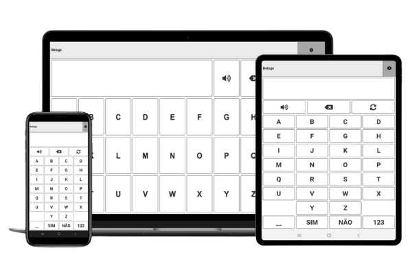

Prancha de CAA alfanumérica
O aplicativo Beluga Talks é composto por duas pranchas de CAA, uma com o alfabeto e outra com os numerais, que converte o texto digitado em voz.

O aplicativo Beluga Talks é composto por duas pranchas de CAA, uma com o alfabeto e outra com os numerais, que converte o texto digitado em voz.
Prancha alfanumérica de CAA
O Beluga Talks é uma prancha alfanumérica de Comunicação Aumentativa e Alternativa (CAA). Através dela, é possível selecionar letras e números, formar palavras e frases e utilizar o sintetizador de voz para que o conteúdo seja lido em voz alta.
O aplicativo contém duas pranchas, sendo uma alfabética e uma numérica, contendo, também, as teclas "sim" e "não", tecla para leitura em voz alta, botão para acessar as configurações e tecla para alternar entre uma prancha e outra. Nas configurações, a ferramenta oferece opção de navegação por varredura e modo escuro.
Desenvolvido pelo Centro Técnológico de Acessibilidade do Instituto Federal de Educação, Ciências e Tecnologia do Rio Grande do Sul, disponibilizado de forma gratuita e com código fonte sob a licença GPLv3 e Creative Commons NonCommercial-ShareAlike 3.0 Unported (CC BY-NC-SA 3.0)


Disponibilizamos o manual de uso para que você aprenda a usar todas as funcionalidades disponíveis no Beluga Talks. Também ensinamos a instalar em seu dispositivo no manual de instalação.
Seu feedback é muito importante. Envie um e-mail para nós contando sua experiência para identificarmos o que podemos melhorar, assim como, os pontos positivos.
O projeto desse App está hospedado no GitHub para que você, desenvolvedor ou empresa, contribua com melhorias ou correções caso encontrem algum bug.
GitHub do projetoPara conhecer mais sobre os trabalhos e projetos desenvolvidos pelo CTA acesse nosso site ou redes sociais disponíveis na lista abaixo.